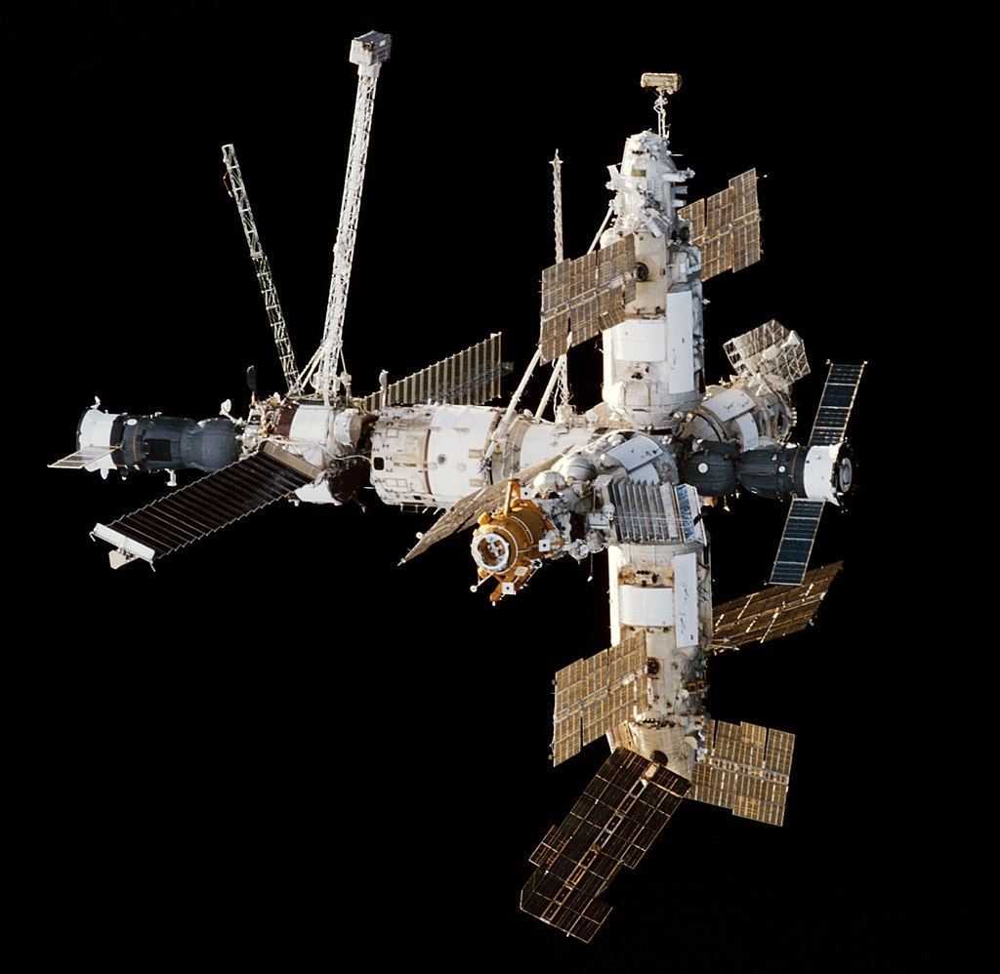

20 февраля 1986 г. - Россия выводит на орбиту базовый модуль орбитальной станции "Мир". «Мир» стал первой непрерывно населенной долгосрочной исследовательской станцией на орбите. Он удерживал рекорд самого длительного непрерывного присутствия человека в космосе (3644 дня), но затем его превзошел МКС 23 октября 2010 года.
- Запуск - 20 февраля 1986 – 23 апреля 1996;
- Возвращение - 23 марта 2001 05:59 UTC;
- Длина - 19 м;
- Ширина - 31 м;
- Высота - 27.5 м;
